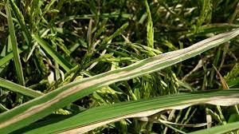
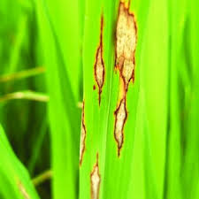

⚠️ ఇది కేవలం అవగాహన కోసం మాత్రమే.
సరైన మందులు మరియు మోతాదుల కోసం
వ్యవసాయ అధికారిని తప్పనిసరిగా సంప్రదించండి.

బ్లాస్ట్ వ్యాధి
లక్షణాలు:
- ఆకులపై వజ్రం ఆకార మచ్చలు
- మధ్యలో తెల్లటి లేదా బూడిద రంగు

ఆకు ఎండు తెగులు
లక్షణాలు:
- ఆకు అంచుల నుండి ఎండిపోవడం
- పసుపు → గోధుమ రంగు

గోధుమ మచ్చలు
లక్షణాలు:
- చిన్న గోధుమ రంగు మచ్చలు
- గింజలు పూర్తిగా నిండకపోవడం

షీత్ బ్లైట్
లక్షణాలు:
- కాండం దగ్గర గోధుమ / బూడిద మచ్చలు
- తేమ ఎక్కువగా ఉన్నప్పుడు వేగంగా వ్యాప్తి

టుంగ్రో వైరస్
లక్షణాలు:
- ఆకులు పసుపు / నారింజ రంగులో మారడం
- మొక్క ఎదగకపోవడం